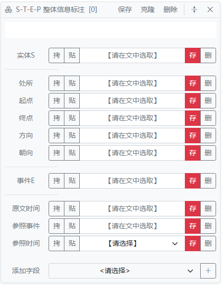

SpaCE2024中文空间语义信息标注工作指南V2.0
阅读说明：黄色高亮的部分是标注时需要特别注意的事项，下划线的部分是有别于SpaCE2022~2023的表述。
【V2.0版本更新说明】
1.更正错误：
拼接改为并置。
2.1节空间实体S的标注中，对于并列结构，如果P信息相同，则将并列结构内的实体以并置的方式填入S。
参照时间是“V1和V2之间”时，V1和V2以并置的方式填入参照事件文本框。
更正操作面板的按钮介绍说明。
2.新增内容：
普通实体标注。详见第2.4节。
操作视频。详见第6节“操作说明”。
“部位”和“距离”的标注规定。详见第2.2节注意事项。
参照时间的参照事件选择。详见第4节注意事项。
不需要分析机构、行政区划等专有名词名称的空间信息。详见示例13。
身体动作文本的标注。详见示例14。
1 任务简介
课题组通过计算机程序收集了大量自然文本语料，主要是专业领域的文本（如交通事故类语料），少量普通日常语言文本。语料已进行了自动分词和词性标注，其中跟空间信息相关的方位词、趋向动词、处所词、介词和副词已在标注页面上进行了分色高亮显示。
标注任务： 标注句中空间实体，空间实体的方位信息，与空间实体方位信息有关的事件（含时间）信息。
标注对象： （1）空间信息，即句中的空间实体（S）及其空间方位信息（P），包括空间实体的静态方位信息和动态方位信息； （2）影响空间实体空间信息的事件信息（E），说明空间信息发生的方式、目的、原因； （3）跟空间实体空间信息和事件信息相关的时间信息（T）；
人们可以针对这些信息发问。典型的问题如下：
（1）某物（或某人）在何处？
（2）某物（或某人）某时在何处？
（3）谁使得某物（或某人）某时在某处？以及如何使得某物（或某人）某时在某处？
标注流程：
（1）通读整段；
（2）确认有空间信息的标点句（以下简称“SS句”）；
（3）选取SS句中的空间实体（S），全部S都应标注（详见第2.1节）；
（4）选取空间实体S的空间方位信息（P），S的全部P信息都应标注（详见第2.2节）；
（5）选取与空间实体方位信息有关的事件信息（E）（详见第3.1节）；
（6）选取与S、P、E相关的时间信息（T）（详见第4节）；
（7）对E做进一步事件角色信息标注（详见第3.2节）；
（8）标注假S-P信息（F）（详见第5节）
（9）文本中跟S、P相关实体的同指关系标注（R）（详见第2.3节）
（10）选取没有在S、P中出现的普通实体（详见第2.4节）
为方便记忆和称说，本文档将S、T、E、P空间语义四要素信息标注概括为STEP信息标注。其中，S-P空间信息是标注的核心，是必备要素。从标注顺序的角度讲，上述要素关系如下：
P依附于S（先定S，再定P）；
E依附于S、P（先定S、P，再定E）；
T依附于S、P，E（先定S、P、E，再定T）；
F依附于S、P，用于标记S-P不发生（在S、P标完后，再标注F）；
R依附于S、P，用于标记文本中指称相同的实体成分（在S、P、E、T标完后，再标注R）。
2 空间信息标注
2.1 空间实体S的标注
一个实体是空间实体，当且仅当句中描述了该实体的空间方位信息。
例如：
例(1) 阿Q站在大树旁。
例(2) 我从冰箱里拿出酒精。
例(1)中有两个表示实体的词：“阿Q”和“大树”，其中“在大树旁”说明了“阿Q”的空间方位信息。所以”阿Q“是空间实体。而“大树”的空间方位信息在句中是缺失的，这句话并不关注“大树”的空间方位。
例(2)中有三个表示实体的词：“我”、“冰箱”和“酒精”，其中“酒精”的空间方位信息很清楚，是“从冰箱里”，而“我”和“冰箱”的空间方位信息是缺失的，因此例(2)中“酒精”是空间实体，“我”和“冰箱”不是空间实体。
典型的S是现实物理空间中的实体。此外，也包括信息空间中的实体，虚拟认知空间中的实体。如果没有针对句中实体的空间信息发问的动机，则该实体不是S。
例如：
例(3) 照片上那只狗被拴在一根柱子上。
例(3)是一个信息空间。“狗”在信息空间“照片”中，也属于需要描写其P信息的空间实体S。
例(4) 护士的话似一幢楼塌下来压在我们头上，把我们全压垮了。我们似乎走进了一条长长的黑地道，不知所措。
例(4)的场景具有修辞色彩。其中的“一幢楼”,“我们”都是S，有相关P信息。
例(5) 史婆婆道：“你要是伤了我徒儿性命，我这就上碧螺山去，一辈子也不出来了。”
例(5)是虚拟条件句，空间实体“我”的空间信息“上碧螺山去”尚未发生，将来条件得到满足时可能发生。
例(6) 周冠仁从事法医工作十几年来，养成了一出家门就将一切抛在脑后的性格。
例(6)中“周冠仁”不是S，因为无法以此句信息为基础，提出有关该实体的空间方位信息问题。
选取S的具体内容时，所选取字符片段能区别于句中其他实体即可，允许选取修饰成分。
S缺省时，应尽可能找回。
例如：
例(7) 妈妈买了些苹果，回家的路上遇到邻居王奶奶，就顺手从袋子里拿了几个给她。
例(7)的空间实体在句子中以数量单位“几个”的形式出现，标注时应该补全实体，以“几个苹果”作为S（参见拼接操作）。
对于并列结构中的多个空间实体：
如果P信息相同，则把并列结构内的实体分别以并置的方式填入S（参见并置操作）。
如果P信息不同，则看作不同的空间实体，处理为多个S，即分别标注多条STEP信息。
2.2 空间方位信息P的标注
S必须有空间方位P。P的标注包括多个具体项目，必须根据句中实际信息的情况细分标注。下表是P信息的细化信息项（特征），以及取值的表达形式（用词语组合模式来表示）和具体含义的说明。
关于表1的说明：
（1）表中“介词、方位词、趋向动词”等是沿用一般《现代汉语》教科书中定义的汉语词类名称。“处所词”指有处所语义的词语，比如“北京、图书馆、人群、太空、未名湖、郊外、四处”等等，处所词能跟“在、到、从”等有空间方位表达功能的介词组合，能跟“上、下、左、右、前、后、里、外”等方位词组合。
（2）“部件处所”特征，专门针对一个空间实体作为一个更大空间实体的部件，描述其空间方位。关于一个空间实体的位置信息，有两个描述视角，一个是以空间实体周围的外部物体为参照物时的空间信息，也就是表中第1项空间特征“处所”的含义，例如：“鼻子在嘴的上方”，其中“鼻子”的处所信息是“在嘴的上方”；另一个视角是以整体为参照物来描述其中部件的方位，例如：“鼻子在脸的中间”，以整体“脸”为参照物来描述“鼻子”的方位，就需要标注“部件处所：在脸的中间”。参见示例10。
（3）“部位”特征，指从一个空间实体看其内部组成部分的位置。典型的场景是交通工具的不同部位的描述。一般是交通工具发生碰撞事件时，指明具体的碰撞位置。例如“货车右前部” “小轿车左后部”等。参见示例12。
描述人体动作时，也经常会涉及到“部位”信息。例如：
例(8) 她回到那死者旁边，两手抄在死者的腋窝下。
例(8)后半部分的空间方位信息标注，需要借助“部位”特征来完成：
S T E P 她 抄 [部位:两手，处所:在死者的腋窝下]
这条STEP信息中，“处所”是指“部位:两手”所在的位置，而不是指“实体:她”所在的位置，即：在有“部位”的STEP信息中，其他P信息小项的直接语义联系都指向“部位”，跟“实体”的联系是间接的。
（4）“朝向”特征，涉及到空间实体自身的特性，只有空间实体的不同侧面功能不同时，才有描述“朝向”的需要。比如：一块自然界的石头没有朝向；而一个由石头雕刻而成的人体石雕则有朝向。因为人体作为一个立体实体，其不同侧面是有不同功能的；表达一个空间实体的“朝向”一般有两种方式：一种是借助方向表达，比如“床头朝东”；另一种是借助另一个空间实体来表达，比如“背对着镜子”。两种表达通常都需要加介词（形式标记）。“朝向”特征，既适用于静态空间实体，也适用于动态空间实体。前者没有“方向”特征，后者则既有“朝向”特征，也同时有“方向”特征。比如，假设甲和乙面对面站立，甲面朝南，乙面朝北，甲以后退方式离开乙，那么，以乙的观察视角来描述甲的空间方位信息，就是甲的位移“方向”为北，甲的自身“朝向”为南。
（5）“路径”特征，包括实际位移和静态的路线（相当于想象的位移）。“路径”值有3种可能性：
① 用形状表达路径，如“之字形”。此时，“路径”字段用来描述位移空间中实体S的路径；
② 用有“通路”、“通道”功能的处所词表达路径，如“河西走廊、101国道、G6高速”。 此时，“路径”字段用来描述位移空间中实体S的路径；
③ 用位移过程中经过的多个空间实体组成的列表表达路径，如<北大东门，中关村北站，清华西门>。多个实体组成的路径，可以通过“并置”操作填入“路径”字段（参见并置操作）。此时，“路径”字段用来描述空间实体S的路径节点构成情况，即S本身就是一个路径。
注意：一条路径有起点，有终点，但路径的“起点”和“终点”，不能填入“起点”和“终点”字段（表1中的第4、5项信息）。如果S有“起点”和“终点”信息，表示S是一个移动的空间实体，“起点”和“终点”是对S位移状态的描述。路径的“起点”和“终点”，只能放在“路径”字段中描述。比如，“北京地铁4号线从安河桥北到天宫院，全长50公里”，空间实体S为“北京地铁4号线”，路径为<从安河桥北，到天宫院>。
（6）“形状”特征，可以起到帮助空间实体定位的作用。例如：“一个花圃是圆环形的，花圃中每隔4米放置一个花盆”，句中这些花盆之间的相对位置关系，就需要借助花圃的形状“圆环形”来说明。“形状”特征有两种使用场景：
① 单个空间实体的形状，如“花圃”；
② 多个空间实体构成的形状，如“公司总部的大楼A座、B座和C座，排成了一个品字形”。这些空间实体以并置方式填入S（参见并置操作）
（7）“距离”特征是二元关系型特征，涉及到两个空间实体。两个空间实体以并置方式填入S（参见并置操作）。距离的取值有两种情况：一是定量描述，通常是“数词+单位词”的形式（如“两百米”），填入“距离1”字段；二是与“远、近”相关的定性描述，此时选择“远、近、变远、变近”四个系统预定义关键字填入“距离2”字段（参见“添加字段”操作说明）。
如果P信息的参照物缺省：
参照物在句子的其他位置出现时，补出参照物。例如：
例(9) 他得意地从被窝里拿出一只碗来，里面放着两个包子。
例(9)第二个SS句的方位信息是“里面”，缺少参照物。参照物是“碗”，出现在了第一个SS句。因此，空间实体“包子”的P信息必须补出参照物，标注为“碗里面”。
句子中出现的参照物不唯一时，以并置的方式填入多个P信息。例如：
例(10) 宋钢在家门口站了一个多小时，他眼睛转到了对面的点心店。
例(10)第二个SS句的方位信息是“对面”，缺少参照物。参照物既可以是“宋钢”，也可以是“家门口”，并不唯一。在标注空间实体“点心店”的P信息时，把“宋钢对面”和“家门口对面”以并置的方式填入一个文本框。
参照物在句子中没有出现，不需要补出参照物。例如：
例(11) 爸爸把我从床头打到床角，外面的雨声混合着我的哭声。
例(11)没有出现能确定“雨声”方位信息的参照物，所以空间实体“雨声”的P信息标注为“外面”即可。
注意事项：
P信息要包含起空间方位信息指示作用的介词。比如“他站在大树旁”和“他站到大树旁”，不能只选取“大树旁”，而应该选取“在大树旁”和“到大树旁”，分别表示处所和终点。附录1列举了起空间方位信息指示作用的介词和趋向动词。
不起指示作用的介词不应被选取。例如：
例(12) 从厨房架子上挂着的篮子里拿两个西红柿。
序号 S T E P 1 篮子 挂 [处所:厨房架子上] 2 西红柿 拿 [起点:从篮子里] 例(12)的介词“从”虽然在文本中距离“厨房架子上”更近，但它所指示的是起点信息，而非处所信息，所以空间实体“篮子”的处所信息不能选取介词“从”，而空间实体“西红柿”的起点信息必须选取介词“从”。
只有表示位移方向的趋向动词才填入“方向”信息。比如“你们先下山，我等会赶上来”中的“上来”并不表示垂直向上的位移方向，而是“水平接近”的意思，所以不需要标注该趋向动词。
特殊规定：“部位”信息必须和其他P信息共现。“距离”信息不能和其他P信息共现。
2.3 实体同指关系标注
空间实体S以及空间方位信息P中的实体在文本中可能是指称词形式表达（如姓名、机构名等专名），也可能是指代词形式表达（如人称代词“你、我、他”）。指称词和指代词之间有同指关系（co-reference）。
有同指关系的实体，共享STEP信息，所以标注S、P时不需要关注实体是指称词还是指代词。同指关系将单独标注，用“=”形式表示（参见“同指标注操作”）。例如：
例(13) 小王走了出去，他默默地走到了草地上。
例(13)的实体同时出现了指称词“小王”和指代词“他”。第一个SS句只出现了指称词，所以把“小王”标注为空间实体S。第二个SS句中只出现了指代词“他”，所以把“他”标注为空间实体S。最后进行同指关系标注：“小王=他”。
注意事项：
与S-P信息无关的实体不需要标注同指关系。
默认同形即同指，不需要标注同形词语之间的同指关系。
如果两个词语同形却不同指，需要标注非同指关系，用“≠”形式表示（参见“同指标注操作”）。
2.4 普通实体标注
为了给机器提供更多的干扰，SpaCE2024要求标注文本中空间信息未被提及或并不被关注，也不提供空间方位信息的普通实体。以歧义格式“名词 + 在 + 处所词 + 动词词组”为例：
例(14) 阿Q在舞台上演话剧。
例(15) 阿Q在柜台上放了一吊钱。
例(14)的实体“阿Q”是空间实体，实体“舞台”是处所信息“在舞台上”的一部分，而实体“话剧”没有物理载体，空间信息并不被关注。“话剧”应标注为普通实体。
例(15)的实体“一吊钱”是空间实体，“柜台”是处所信息“在柜台上”的一部分，而实体“阿Q”的空间信息并没有提及，不能认为“阿Q在柜台上”，这是不合常理的。“阿Q”应标注为普通实体。
具体操作中，把不在S和P中出现的实体选中，标注为普通实体。参见“普通实体标注操作”。
3 事件信息标注
3.1 事件信息
事件E信息用来说明空间信息发生的方式、目的、原因。例如：
例(16a) 汤姆平常放在床头的泰迪熊不见了。
例(16b) 汤姆平常挂在床头的泰迪熊不见了。
例(16c) 汤姆平常藏在床头的泰迪熊不见了。
上面三个句子的E信息分别为“放、挂、藏”，而S、P、T信息则没有区别。E信息的不同，可以表示空间信息的细微差异：
“放”意味着“泰迪熊”在床头表面区域，处于“跟床头接触”的空间关系中；
“挂”意味着“泰迪熊”在床头上方区域，处于“未跟床头接触”的空间关系中；
“藏”意味着“泰迪熊”在床头位置，但不在床头表面，而是被某个物体“遮盖”了，未暴露在人的视线中。
注意事项：
谓词“在、位于、有、是”都可以填入E。
如果选取不同的谓词不影响S-P信息的标注，则选取一个作为E即可，不需要标注多次。比如“老王在里面又唱歌又跳舞，开心着呢！”，S-P信息“老王在里面”的E在“唱歌”和“跳舞”中选择一个即可。
如果影响S-P信息的标注，则根据E的不同标注多次。比如“两个汉子把她摁跪在地上”，在“摁”事件中，“在地上”是终点，在“跪”事件中，“在地上”是处所，两个信息不完全等同，所以都要标注。参见示例5。
一条STEP标注的P信息若有多个，必须都与E有关，否则应分为多条STEP标注：
例(17) 桑桑从树林里钻了出来。
例(18) 桑桑钻到巷子里，再也不出来了。
例句 S T E P F 17 桑桑 钻 [起点:从树林里，方向:出来] 18 桑桑 钻 [终点:到巷子里] 18 桑桑 [方向:出来] false 例(17)是一条STEP标注含有两个P信息，因为两个P信息都与位移事件“钻”有关。例(18)则有两个事件，“出来”属于第二个事件的P信息，而与第一个事件“钻”无关，所以分为两条STEP标注。
3.2 事件角色标注
围绕E信息进一步标注事件角色信息。所谓事件的语义角色，就是动词周围的名词性成分所起到的不同的语义功能。对这些名词性成分的不同语义功能的标注，有助于更全面地理解空间实体的空间方位信息之间的联系。
本课题设计了一个7类语义角色的标注体系（参考附录2，进行了大幅简化）。角色名称参照命题语义标注语料库（Propbank）的方式；角色含义参照北京大学计算语言学教育部重点实验室在国家973项目“面向三元空间的互联网中文信息处理理论与方法”（项目编号：2014CB340500）子课题4：“融合三元空间的中文语言知识与世界知识获取和组织”中所用的定义（参考附录3）。
| 序号 | 角色标记 | 对应论旨角色 | 含义 |
|---|---|---|---|
| 1 | arg0 | 施事（共同施事）、当事（间接当事） | 核心角色1：主体 |
| 2 | arg1 | 受事、系事、结果、对象、内容 | 核心角色2：客体 |
| 3 | arg2 | 与事 | 核心角色3：受益/受损者 |
| 4 | arg3 | 工具、材料、方式 | 外围角色1：伴随者（准外围） |
| 5 | argM | 事量、范围、原因、目的 | 外围角色2：环境成分（真外围） |
| 6 | argS | 起点、终点、路径、方向、处所 | 外围角色3：空间角色 |
| 7 | argT | 起始、结束、时点、时段 | 外围角色4：时间角色 |
关于表2的说明：
argM泛指修饰性的外围语义角色（Modifier）。argM比arg3更外围，跟事件核心动词的关系更松散。比如：用刀砍了两天树。“刀”是动词“砍”的工具角色，属于外围语义角色，但跟”两天‘这个事件时间量成分相比，“刀”跟“砍”的关系更紧密。因为“刀”能组合的动词范围比较小，“刀”跟如“等”“听课”之类的动词就没有组合关系，无法充当“工具”角色，而“两天”跟动词组合的范围就很大，可以“等两天、听两天课”，所以，如果针对“用刀砍了两天树”来标注语义角色，则“刀”标注为动词“砍”的arg3，而“两天”则标注为argM。
注意事项：
并不是句中所有的谓词，都要标注其语义角色。仅需针对跟S、P有关的E事件，标注其角色信息。
E如果是动词的离合用法，应将分离的成分（不连续字符）拼接成一个完整单位。
例(19) 他昨晚在宾馆洗了两次澡。
E arg0 arg1 arg2 arg3 argM argS argT 洗澡 他 两次 在宾馆 昨晚 例(19)中“洗澡”是动词离合用法：“洗”和“澡”不连续出现，但却是一个整体单位（一个动词），标注时直接把两个字符拼接起来。
事件角色中argS的值是“在宾馆”，必须填入句中起空间方位指示作用的介词或趋向动词。
所有角色都是与当前E谓词相关的成分，不应标注与E无关的其他成分。
例(20) 吴仲荣掏出办公室的钥匙，放到桌上，他缓缓地站起来，向门口走去。
E arg0 arg1 arg2 arg3 argM argS argT 走 他 向门口去 例(20)中“办公室” “钥匙” “桌上”等，都跟当前“走”这个动作行为无关，因此不能标注在 arg0 到 argT这些角色中。
多个相同的方位信息填入argS时，以拼接方式填入，如“向门口”和“去”都是方向信息。多个不同的方位信息填入argS时，以并置的方式填入。
4 时间信息标注
时间信息（T）分为两类：
时值时间：指句中表达时间义的表达所负载的时间信息。
参照时间：指未在句中明示的时间信息。具体又分两种参照方式：
说话时间：说出一句话的时间，一般理解为“现在”。参照说话时间可以表达虚拟情境，例如“如果他在北京的话，这个问题就好解决了”，可以指“他在北京”这一空间信息，对应过去某个时间，或者将来某个时间。
事件时间：句中每个事件自身都自带有T信息。如上面例(16)中“放、挂、藏”的时间。可以用代表事件的动词或动词词组（记作V）来定位其时间。标注时用“V之时” “V之前” “V之后”等指称不同的时间。如动词“放”可以指称的时间包括：“放之时” “放之前” “放之后” 等等。
时间信息标注，是以P信息为基准，描述每个P信息伴随的T信息。如果一句话标注了多个P信息，则每个P信息都应考虑标注对应的T信息。T信息在标注界面上分为3个字段来描述：原文时间，参照事件，参照时间。
“原文时间”指从原文中选取时间义表达来表示时间信息，属于T信息中的“时值时间”。
“参照时间”包括两种：一种是参照说话的时间，一种是参照事件的时间。
如果是参照说话的时间，则T信息从标注界面上“参照时间”字段对应的下拉菜单中选取，有3个系统关键字可供选择：“说话时”、 “过去”、 “将来” 。
如果是参照事件的时间，则T信息需要分两步填写：
先在“参照事件”字段文本框中填入描述时间信息需参照的事件。
再在“参照时间”字段下拉菜单中选取具体的时间值：“之前”、“之后”、“之时”、“之间”。
| 序号 | 类型 | 时间字段 | 时间值 | 示例 / 说明 |
|---|---|---|---|---|
| 1 | 时值时间 | 原文时间 | 时间义词语 | 上午、13：15，2022年6月25日，儿童节，夏至 |
| 2 | 说话时间 | 参照时间 | 说话时 | 参考语境说话人时间信息，“说话时”为系统关键字 |
| 3 | 说话时间 | 参照时间 | 过去 | 参考语境说话人时间信息，“过去”为系统关键字 |
| 4 | 说话时间 | 参照时间 | 将来 | 参考语境说话人时间信息，“将来”为系统关键字 |
| 5 | 事件时间 | 参照事件+参照时间 | V之前 | 参考事件V的时间信息，V是句中动词或动词词组 |
| 6 | 事件时间 | 参照事件+参照时间 | V之后 | 参考事件V的时间信息，V是句中动词或动词词组 |
| 7 | 事件时间 | 参照事件+参照时间 | V之时 | 参考事件V的时间信息，V是句中动词或动词词组 |
| 8 | 事件时间 | 参照事件+参照时间 | V1和V2之间 | 参考事件V1和V2的时间信息，V1和V2是句中动词或动词词组 |
注意事项：
标注优先级：时值时间 > 参照时间。
若原文就有“现在、过去、将来”等时间词语、“…之后/之前/的时候”等事件时间表达，那么T信息类型仍优先归属“时值时间”，需从句中选取字符填入“原文时间”字段。
为简化标注操作，约定：
（1）T为空时，代表时间信息未知、或不受关注；当T信息中填值时，表示该信息值得强调。
（2）如果已填写E信息，同时T信息为空，则代表T是“E中所填动词V之时”。
参照事件限定在发生时间距离目标S-P-E信息较近的事件，不选择距离较远的事件。只有在以该事件为参照的情况下，S-P信息的时间才是可确定的，那么该事件才作为参照事件。
例(21)要确定“李光头和宋钢在外面的屋子里喊叫”的T信息，距离较近的有“抱”事件和“松开”事件，但“抱”、“喊叫”、“松开”这三个事件的发生时间没有明显的线性前后关系，不能确定“喊叫”的时间是在“抱之时”、“抱之后”，或是“松开之时”、“松开之后”，所以“抱”事件和“松开”事件不能作为参照事件，该条标注没有T信息。
例(21)有明显时间线性关系的是“扭头”、“打开屋门”、“走出来”三个事件，“扭头”发生在“打开屋门”之前，“走出来”发生在“扭头”之后，所以“打开屋门”可以作为参照事件确定“她扭过头来”和“她走出来”的T信息。
参照时间是“V1和V2之间”时，V1和V2以并置的方式填入参照事件文本框。
条件句、祈使句中尚未实现的空间信息视为可能在将来发生的空间信息，与被否定的空间信息（详见第5节）有所区别。T信息选择表“将来”的时间表达，或者预定义字段“将来”或“V之后”。例(5)条件句的标注：
序号 S T E P F 1 我 伤了徒儿性命之后 [终点:碧螺山，方向:上去] 2 我 一辈子 [方向:出来] false 这是一种近似的时间标注。例(5)的SS1是一个“要是...就”引导的条件句：在条件“伤了我徒儿性命”成立时，“我上碧螺山去”的空间信息发生，所以标注中把“伤了徒儿性命”作为时间的参照事件，表示在“伤了徒儿性命之后”，S-P信息发生。
例(21) 李兰紧紧地抱着他，直到李光头和宋钢在外面的屋子里大声喊叫，李兰才松开了她的手，宋凡平问她为什么哭了？她害羞地扭过头去，打开屋门匆匆走了出来。
5 空间信息否定标注
关于S、P信息标注的说明，均以肯定S-P空间信息在文本中的真实性为前提条件。如果文本中对S-P空间信息做出了否定性陈述，或者可以推理出S-P空间信息为假，则标注F信息（Facticity），取值为false。
例(22) 桑桑钻到了玉米地里，直至天黑也没有回家。母亲对我说：“不准去喊他，就让他死在外面！”
序号 S T E P F 1 桑桑 钻 [终点:到了玉米地里] 2 桑桑 直至天黑 [方向:回，终点:家] false 3 桑桑 死 [处所:在家外面] 例(22)有3条STEP标注：
第1条标注的空间信息为真，不需要标注F信息，默认F值为空。
第2条标注对应“没有回家”，根据否定词“没有”，可知空间信息“回家”不发生，所以F值为false。
第3条标注对应“让他死在外面”，是一个虚拟句，不过S-P空间信息“桑桑在外面”发生了，所以不需要标注F，即F信息只关心S-P空间信息的真假，而不关心其他信息的真假。
注意事项：
否定词语不填入P和E，文本对空间信息作出的否定性陈述用F表示。比如“钥匙不在桌子上”的标注中，E为“在”，不选取否定词“不”。
运用比喻、拟人、夸张等修辞手法的句子（例4的SS1）以及想象句（例4的SS2）需要标记F。
其他情形下，没有否定性陈述，但可以推理得出的F信息必须配合T信息一起标注。例如：
例(23) 爸爸把我放在桌子上的钥匙拿走了。
序号 S T E P F 1 钥匙 拿走之前 放 [处所:在桌子上] 2 钥匙 拿走之后 放 [处所:在桌子上] false 3钥匙放[处所:在桌子上]false例(23)虽然没有否定性陈述，但从“拿走了”可以推理出“钥匙不在桌子上”的信息。要确定“钥匙”的空间方位，T信息必须强调：第3条标注没有T信息，表示“放之时，钥匙不在桌子上”，是一个错误的标注（删除线部分）。
以“拿走”作为时间的参照事件，可以得出第1条标注，表示“拿走之前，钥匙在桌子上”；以及第2条标注，表示“拿走之后，钥匙不在桌子上”。为简化操作，两条标注都正确，但只需要选择其中一种标注方法，因为两条标注的S-P信息“钥匙在桌子上”和参照事件“拿走”是完全一致的。
6 操作说明
操作界面：
（1）操作面板：操作界面左侧是语料文本显示区，右侧是操作面板。面板初始界面上有5个“新增×××”导航按钮（下图红色框所示），分别点击后，会对应显现出5个信息标注区：
S-T-E-P整体信息标注区（逐条标注文本中的S、T、E、P信息）
事件角色信息标注区（标注E的arg0、arg1、arg2、arg3、argM、argS、argT角色）
同指关系标注区（标注异形同指、同形异指的空间实体）
普通实体标注区（标注不在S和P中的实体）
特殊情况标注区（标记无空间义、错别字等情况）
（2）标注显示：在5个“新增……”按钮的上方，有标注内容实时显示区（图中“暂无内容”所在文本框区域）
（3）内容排序：在标注显示区下方，有3个排序按钮，分别可以对标注结果按照3个标注排序，包括：
按照词语在原文中的顺序排序
按照标注时创建条目的顺序排序
按照“STEP整体信息、事件角色、同指关系、普通实体”4个组排序。
（4）数据层级：由大到小顺序：记录（record） → 字段（field）→ 值（value）

记录（record）：上面框图的全部信息，代表“S-T-E-P”一条数据记录，在框图左上角的“S-T-E-P整体信息标注 [2]”，表示这是第2条记录。
字段（field）：框图内从上往下用短线分隔了4个区，分别对应S、P、E、T信息标注区，最后有一行“添加字段”，用于增加不太常用的字段。在框图中显示的“实体S” “处所” “起点” “终点” “方向“ ”朝向“ ”事件E“ ”原文时间“ ”参照事件“ ”参照时间“ 等，都是同一条记录的不同字段名称，每个字段占一行。
值（value）：字段名称后对应的文本框中，就填写字段的值。标注时，主要就是从语料文本中选取合适的文本片段，作为各字段的信息值，填入文本框中。
操作顺序：
第一步：在S-T-E-P整体信息标注区
a：标注S信息，在语料原文中选取空间实体文本片段，填入“实体S”对应的文本框。
b：标注P信息，选取合适词语填入空间特征（处所、起点…）对应的文本框。
c：标注E信息，选取S-P对应的动词，填入“事件E”对应的文本框。
d：标注T信息：
如果原文中有时值时间，从文本中选取词语，填入“原文时间”对应的文本框。
如果原文中没有时值时间，参考时间为说话时间，则从“参照时间”下拉菜单中选取“说话时”、“过去”或“将来”填入。
如果参考时间为原文中的事件，则先从文本中选取动词，填入“参照事件”对应的文本框，然后在“参照时间”下拉菜单中选取合适的参照时间值“之前”、“之后”、“之间”、“之时等。
e：标注F信息：若当前S-P信息为假，在“添加字段”下拉菜单选取“事实性”，添加false标记。
第二步：在事件角色信息标注区，选取当前S、P所在标点句内的事件语义角色，填入角色对应文本框。
事件谓词E要填入“谓词来源”字段，该字段的下拉菜单中列出了已经填写的全部STEP记录，谓词E从中选择一条填入。
第三步：在同指关系标注区，选取文本中异形同指或同形异指的实体成分，填入“同指片段”对应文本框：
异形同指：选取两个不同形式的文本片段（记作A和B），以“并置”方式填入文本框。同指关系标注为“A = B”。
一种特殊的情形表示为“A=BC”，其中A 是集合总称性成分，通常是复数性指代词，比如“他们” “他们俩”；B、C是集合的成员性成分，比如“阿Q 小D”。同指关系为：他们俩 = 阿Q 小D。操作时，先以并置的方式填入A和B，再拼接B和C。
同形异指：选取两个相同形式的文本片段（记作A），以“并置”方式填入文本框，然后在“添加字段”下拉菜单中，选取“同指事实性”，标记为false。同指关系标注为“A ≠ A”
为使标注区域版式简洁，其中P区域没有把表1中P信息的10个小项全部列出，而是预置了其中比较常见的5项：处所、起点、终点、方向、朝向。另外5项，出现频次相对较低，如果需要标注，可以通过“*添加字段”的方式，添加到S-T-E-P整体信息标注区，然后再填写相应信息。
F信息的出现频次也较低，如果需要标注，也通过“添加字段”方式，添加到S-T-E-P整体信息标注区。添加时在下拉菜单中选择“事实性”，添加后程序自动为F信息项赋值为false。
“距离”取值有两种情况：
如果原文中有关于两个空间实体距离的定量描述，则通过“添加字段”的方式，选择“距离1”字段，填入相应文字内容。
如果原文中是定性描述，或者原文中没有，但距离信息可以推知，则通过“添加字段”的方式，选择“距离2”字段，从下拉菜单中选择“远、近、变远、变近”中的一个来描述距离。
操作视频：
操作要点：
要点1：拷贝、粘贴、修改、删除、存储 —— 这5个基本操作均为鼠标点选操作。
要点2：“删除”功能针对不同层级的数据，操作有所不同：
点“删除”（在“克隆”的右侧）：表示删除当前记录（record），即删除整个信息标注区。
点“删”：表示删除当前字段（field），即删除字段名称及其同一行文本框。
点 × 号：表示删除当前值（value），即删除一个文本片段。
点击3个信息标注区右上角的 × 号，表示关闭当前标注区，不是删除。
要点3：保存！！！
保存字段值：点击“存”，表示保存每个字段的值。
保存记录：点击“保存”（在“克隆”的左侧），表示保存当前数据记录（全部字段及字段值）：点击“保存”相当于自动点击了全部的“存”（即自动保存记录中每个字段和字段值）。
如果没有点击“存”，也没有点击“保存”，填入内容将不会被记录！！！
要点4：新增与克隆。
需要为一个新的S标注STEP信息时，点击“新增”按钮，新增一条记录。
需要为一个现有的S添加更多P信息时，点击“+”按钮，添加一个字段。
需要复制当前的记录时，点击“克隆”按钮，新增一条同样内容的STEP记录。
拼接：点击⊕加号，把当前拷贝字符串与文本框中原有字符串进行拼接，合并为一个单位。
如果在原文中选取词语“姐姐”后，点击⊕加号，就是跟文本框中已有的“阿曾”拼接，成为“阿曾姐姐”，仍然是一个S。
并置：点击“填入”，把当前拷贝字符串与文本框中原有字符串并置，使文本框内容为两个并列单位。
如果在原文中选取词语“姐姐”后，点击“填入”，就是跟文本框中已有的“阿曾”并置，这时候实体S相当于有两个，一个是“阿曾”，另一个是“姐姐”，表示“阿曾和姐姐”。
注意事项：
标注过程中，应经常点击“暂存”按钮，保存已标内容。
完成一段语料全部信息标注后，应点击“完成”按钮，再进行“下一条”语料的标注。
如果没有点击“暂存”或“保存”就点击“下一条”或“上一条”，将导致当前标注内容丢失！！！
附录
附录1：指示空间方位信息的形式标记
| 形式标记 | 指示的P信息 |
|---|---|
| 在；于 | 处所；部件处所 |
| 从；由；自 | 起点 |
| 到；至；在 | 终点 |
| 经；过；沿；从；顺着；通过 | 路径 |
| 向；朝；往 | 方向 |
| 上；下；进；出；回；往；起；来；去 上来；上去；下来；下去；进来；进去；出来；出去；回来；回去；起来 | 方向 |
| 向；朝；对着 | 朝向 |
| 距；离；距离 | 距离 |
附录2：一个论旨角色层级分类体系
附录3：事件角色细粒度分类
下表是28个论旨角色的含义说明及示例（黄色高亮成分即为对应语义角色在当前句中的示例，方框中是谓词）。

Tips
标注工具仅支持电脑端chrome、firefox浏览器。
如有任何问题，请联系组长。
文档最近更新时间：2024-01-22
北京大学SpaCE2024评测任务课题组
本项目得到国家科技创新2030“新一代人工智能”重大项目——“以自然语言为核心的语义理解理论、模型与方法”（项目号：2020AAA0106701）支持。